이 백과사전은 실제 웹 검색으로 확인한 정부기관 자료·전문 블로그·유튜브 채널을 바탕으로 만들었습니다. 물때·계절·금어기 등은 매년 바뀌므로, 현장에 나가기 전 출처에 링크된 공식 자료로 최신 정보를 다시 확인하세요.
낚시
대·릴로 물고기를 낚는 가장 오래되고 대중적인 채집법. 낚시터·대상어·기법에 따라 완전히 다른 놀이가 됩니다.
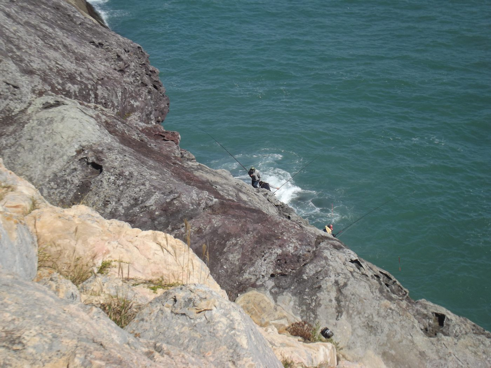
낚시의 종류
이름을 누르면 아래 상세 설명으로 바로 이동합니다.
| 종류 | 특징 | 난이도 | 초보자 적합도 |
|---|---|---|---|
| 원투낚시(캐스팅) › | 채비를 멀리 던져 바닥에 놓고 입질을 기다림. 방파제·해변 어디서나 가능 | 쉬움 | 가장 배우기 쉬움 |
| 갯바위·방파제 찌낚시 › | 구멍찌로 밑밥을 뿌려 감성돔·참돔 등을 노림. 찌맞춤 등 기술 필요 | 보통 | 방파제는 쉬움, 원도 갯바위는 어려움 |
| 루어낚시(락피싱·에깅·배스) › | 가짜 미끼를 던지고 액션을 줘 포식성 어종을 유혹. 볼락 락피싱·에깅은 입문 난이도가 낮음 | 보통 | 배스·볼락 루어는 쉬운 편 |
| 지깅 › | 무거운 메탈지그를 수직·연안 캐스팅으로 운용해 방어·부시리 등 회유어 공략 | 어려움 | 체력·장비 부담 큼 |
| 배낚시(선상낚시) › | 배를 타고 나가 먼바다 포인트를 공략. 원거리·심해 어종 가능 | 보통 | 장비 대여 시 접근 쉬움 |
| 민물낚시(붕어·향어) › | 저수지·관리형 낚시터에서 즐기는 전통 바닥낚시 | 쉬움 | 매우 높음 |
| 얼음낚시 › | 겨울 결빙된 호수에서 빙어·산천어를 낚는 축제형 낚시. 얼음 두께 10cm 이상 확인 필수 | 쉬움 | 아이·가족 단위로 최적 |
| 견지낚시 › | 대나무 외짝 얼레에 줄을 감아 흐르는 물에서 스침질로 피라미 등을 낚는 한국 고유 기법 | 쉬움 | 여름 피서낚시로 적합 |
| 플라이피싱 › | 무게가 실린 라인으로 인조 미끼를 캐스팅. 국내는 송어·산천어 대상 | 어려움 | 캐스팅 동작 습득에 강습 필요 |
| 카약낚시 › | 카약으로 이동성을 확보해 육지에서 닿지 않는 포인트 공략 | 보통 | 기상·안전수칙 숙지 필요 |
낚시 종류별 상세 설명
원투낚시(캐스팅)쉬움›
정의
채비를 멀리 던져 바닥에 가라앉힌 뒤 입질을 기다리는 가장 기본적인 낚시. 방파제·백사장 어디서나 별다른 지형 조건 없이 시작할 수 있어 "가장 배우기 쉬운 낚시"로 꼽힙니다.
필요 장비
원투대 3호 이상(4.5m 전후), 릴 3000번 이상 중형 스피닝릴, 원줄 PE 4호 또는 나일론 6호를 200m 이상 감아 원거리 캐스팅에 대비합니다.
기법
- 처넣기낚시 — 채비를 멀리 던지지 않고 발밑에 넣고 기다리는 입문용 변형
- 카고낚시(직공낚시) — 봉돌 대신 밑밥통(카고)에 크릴을 담아 투척, 집어와 동시 진행
- 비거리 늘리기 — 낚싯대 탄성과 원심력이 핵심, 초릿대~봉돌 거리 1.5m 유지
대상 어종 · 시즌
여름 보리멸(백사장 대표 어종), 광어·삼치·농어·우럭·노래미 등 계절별로 다양합니다.
갯바위·방파제 찌낚시보통›
정의
구멍찌·막대찌로 미끼(주로 크릴)를 조류에 자연스럽게 흘려보내며, 밑밥으로 물고기를 채비 주변에 모으는(집어) 방식. 감성돔·벵에돔·참돔 등 갯바위 대표 어종을 노립니다.
4가지 흘림 방식
- 고정찌 — 수심이 일정한 얕은 곳에 적합, 가장 쉬움
- 반유동 — 면사매듭으로 수심을 지정, 입문자 최우선 추천
- 전유동 — 저부력찌가 매듭 없이 전 수심을 탐색, 숙련자용
- 막대찌 — 원투성·시인성이 좋아 원거리·배낚시에 사용
시즌
감성돔은 가을~겨울(10월~)과 봄(3~6월), 참돔은 4~6월·10~11월이 성수기입니다.
안전
원도 갯바위는 배로만 진입하며 구명조끼·스파이크화가 필수입니다. 방파제는 편의시설이 갖춰져 있어 입문에 적합합니다.
루어낚시(락피싱·에깅·배스)보통›
정의
가짜 미끼(루어)를 캐스팅한 뒤 릴링·액션으로 살아있는 먹이처럼 움직여 포식성 어종의 반사적 입질을 유도하는 공격적인 낚시 장르입니다.
세부 장르
- 락피싱 — 볼락 등 암초·해조밭 소형 루어. 입문 난이도 낮음
- 에깅 — 에기(가짜 오징어)로 갑오징어·주꾸미·무늬오징어·문어를 공략. 폴링→저킹→스테이 3단 액션
- 배스낚시 — 저수지 민물, 텍사스·다운샷·캐롤라이나·지그헤드·노싱커 등 리그 선택이 핵심
- 시배스(농어) 루어 — 미노우·바이브레이션·탑워터를 계절에 맞춰 운용
- 아징 — 0.5~3g 초경량 지그헤드로 전갱이·볼락을 노림. UL~L 로드, 소형릴(1000~2000번), 합사 0.2~0.4호
- 타이라바 — 헤드·스커트·바늘이 하나로 된 채비를 감아올려 참돔을 노림. 헤드 무게는 수심 1m당 1g이 기준(조류 빠르면 더 무겁게)
- 사비키(카드채비) — 작은 바늘 여러 개가 달린 채비를 수직으로 내려 전갱이·고등어 등 어군을 노림. 발밑 낚시로 입문 최적
지깅어려움›
정의
무거운 메탈지그를 수직 또는 연안 캐스팅으로 운용해 방어·부시리 등 힘 좋은 회유어를 공략하는 파워풀한 낚시. 전신 근력을 쓰는 만큼 체력 소모가 큽니다.
3가지 스타일
- 하이피치(스피드) 지깅 — 빠르고 격렬한 액션으로 도주하는 베이트피시를 흉내, 반사 입질 유도
- 슬로우피칭 지깅 — 로드 반동으로 느리고 리드미컬하게, 전용 지그(90~250g)와 로드 필요
- 라이트지깅 — 부드러운 가벼운 로드로 보트·카약에서 수직 운용, 접근성 좋음
시즌
가을~초겨울 방어·부시리 회유 시즌이 대표적입니다.
배낚시(선상낚시)보통›
정의
배를 타고 나가 갯바위·방파제에서 닿지 않는 먼바다·깊은 수심 포인트를 공략합니다. 장비 대여가 되는 선사가 많아 초보자도 접근하기 쉽습니다.
대표 출항지
인천 옹진군(남항·만석부두), 태안 신진도·안흥항, 여수 국동항, 통영 영운리항 등 — 우럭·갑오징어·주꾸미·참돔·갈치를 계절별로 노립니다.
예약 방법
어바웃피싱·선상24·더피싱에서 ① 지역·항구 선택 → ② 날짜·시간 설정 → ③ 선박 확인 → ④ 결제 순. 출항 30분 전 도착, 신분증·구명조끼 지참이 대부분 필수입니다.
준비물
멀미약(초심자 필수), 여벌옷, 물·간식. 미끼는 선사에서 제공하는 경우가 많습니다.
민물낚시(붕어·향어)쉬움›
정의
저수지·강·관리형 낚시터에서 붕어·향어·잉어·배스를 노리는, 진입장벽이 가장 낮은 낚시입니다.
바닥낚시 vs 내림낚시
바닥낚시(올림낚시)는 봉돌이 바닥에 닿은 채 찌가 올라오는 신호로 챔질하는 전통 방식이고, 내림낚시는 붕어가 미끼를 살짝 건드리기만 해도 찌가 내려가는 예민한 신호를 이용합니다.
대표 낚시터
예당저수지(국내 최대급), 충주호·대청호(배스), 소양호(다어종) 등이 꼽힙니다.
미끼
지렁이(사계절 강세) > 글루텐(입문 추천) > 옥수수 > 새우 순으로 선호됩니다.
얼음낚시쉬움›
정의
겨울철 얼어붙은 호수에 구멍을 뚫고 빙어·산천어를 낚는 축제형 낚시. 화천 산천어축제(매년 1월~2월, 2026년은 1/10~2/1 예정)가 대표적이며, 온라인 사전 예매 시 비교적 성공률이 높은 상류 구역을 배정받을 수 있습니다.
필요 장비
- 짧은 얼음낚시 전용 대, 아이스오거(얼음 구멍 뚫는 스크류)
- 방한복·방한장갑·방한화, 앉을 방석과 무릎 담요(장시간 착석으로 저체온증 위험)
안전 기준
일반적으로 얼음 두께 10cm 이상이 최소 기준이지만, 기온에 따라 얼음 상태가 수시로 바뀌므로 두꺼워 보여도 방심은 금물입니다. 축제장 등 통제된 구역에서 즐기는 것이 가장 안전합니다.
채비·미끼
빙어는 짧은 가지채비에 구더기(파리 유충) 미끼를 사용하는 것이 일반적입니다.
견지낚시쉬움›
정의·유래
대나무 외짝 얼레(견지대)에 줄을 감아 흐르는 강물에서 피라미·갈겨니·끄리·누치를 낚는 한국 고유의 전통 기법으로, 북한강·남한강 일대에서 특히 성행합니다.
스침질(견지질)
견지대를 상류 쪽으로 챘다가 하류로 내려주며 줄을 풀어주는 동작을 반복합니다. 편납(추)의 무게를 유속에 맞게 조절하는 것이 핵심 — 너무 무거우면 바닥에 걸리고, 너무 가벼우면 상층에서만 떠다닙니다.
필요 장비
입문용 견지대 2만~2.5만원대, 원줄 1.5호 50~70m, 목줄 1호, 바늘 5~9호. 낚시점 또는 북한강·남한강변 견지공방에서 구입할 수 있습니다.
릴 없이 손맛을 직접 느끼는 방식이라 여름 피서낚시로 특히 인기가 많습니다.
플라이피싱어려움›
정의
가벼운 인조 미끼(플라이)를, 미끼 무게가 아닌 라인 자체의 무게로 캐스팅하는 낚시. 백캐스트(뒤로 던지기)와 포워드캐스트(앞으로 던지기)를 리듬감 있게 반복하는 동작이 기본기입니다.
구성 요소
플라이 라인(무게감 있는 두꺼운 줄) → 리더 → 티펫(가장 가는 끝줄) → 플라이(인조 미끼). 플라이는 수면에 뜨는 드라이플라이, 물속을 표류하는 님프, 작은 물고기를 흉내내는 스트리머 등으로 나뉩니다.
국내 여건
강원 산간 계곡의 송어·산천어가 주 대상이며, 송어양식장 체험장에서 장비 대여와 함께 입문할 수 있습니다.
캐스팅 동작 자체를 따로 연습해야 해 난이도가 높은 편 — 초보자는 강습을 낀 체험 프로그램으로 시작하는 것을 권장합니다.
카약낚시보통›
정의
카약으로 이동성을 확보해 육지·방파제에서 닿지 않는 포인트를 공략하는 낚시. 낚시용으로는 앉는 자리가 트여 있어 안정적인 SIT-ON-TOP(개방형) 카약이 주로 쓰입니다.
필요 장비
낚시용 카약, 패들, 구명조끼(다리끈형 필수), 앵커(닻), 방수백. 로드홀더·어군탐지기를 장착한 전용 모델도 있습니다.
안전 수칙
- 구명조끼는 예외 없이 상시 착용(허리띠형이 아닌 다리끈형)
- 바람이 강하거나 뇌우 예보가 있으면 출조를 취소
- 단독 출조를 피하고, 항상 이안류·조류 방향을 확인
시작하는 법
초보자는 구매 전 카약 대여점·체험 투어로 먼저 경험해보는 것을 권장합니다.
기법 더 알아보기 — 찌낚시 방식
같은 찌낚시도 채비를 어떻게 흘리느냐에 따라 완전히 다른 기법이 됩니다.
| 방식 | 원리 | 적합 상황 | 난이도 |
|---|---|---|---|
| 고정찌 | 찌를 원줄의 정해진 위치에 완전히 고정, 항상 같은 수심 유지 | 수심이 일정하고 조류가 적은 얕은 포인트 | 쉬움 |
| 반유동 | 찌는 자유롭게 움직이되 면사매듭으로 멈추는 지점(수심)을 지정 | 특정 수심층 집중 공략, 입질 파악이 직관적 — 입문자 최우선 추천 | 쉬움 |
| 전유동 | 저부력찌가 매듭 없이 수면부터 바닥까지 전 수심을 자연스레 흘러감 | 대상어 유영층이 일정치 않거나 경계심이 강할 때 | 어려움 |
| 막대찌 | 무게중심이 아래인 자립찌 사용, 원투성과 시인성이 좋음 | 저수온기, 원거리 포인트, 배낚시 | 보통 |
기법 더 알아보기 — 원투 & 방파제 기법
기법 더 알아보기 — 루어 리그(배스 중심)
| 리그 | 원리 | 적합 상황 |
|---|---|---|
| 텍사스리그 | 유동 불릿싱커를 웜 앞에 꽂아 밑걸림 최소화 | 오픈워터~수초 밀집지까지 범용 |
| 다운샷리그 | 싱커가 맨 아래, 바늘·웜이 그 위에서 한 자리 오래 머무름 | 드롭오프·급경사 등 깊은 수심 |
| 캐롤라이나리그 | 무거운 싱커를 웜과 분리해 멀리 던지고 웜은 바닥 근처를 천천히 배회 | 넓은 지역 탐색 |
| 지그헤드리그 | 바늘+추 일체형에 웜을 꽂는 단순 채비 | 저활성기·겨울철 예민한 상황 |
| 노싱커리그 | 봉돌 없이 바늘에 웜만 꽂아 가장 자연스러운 폴링 | 초심자, 밑걸림 회피 |
기법 더 알아보기 — 지깅 & 에깅 액션
기법 더 알아보기 — 그 외
필요 장비
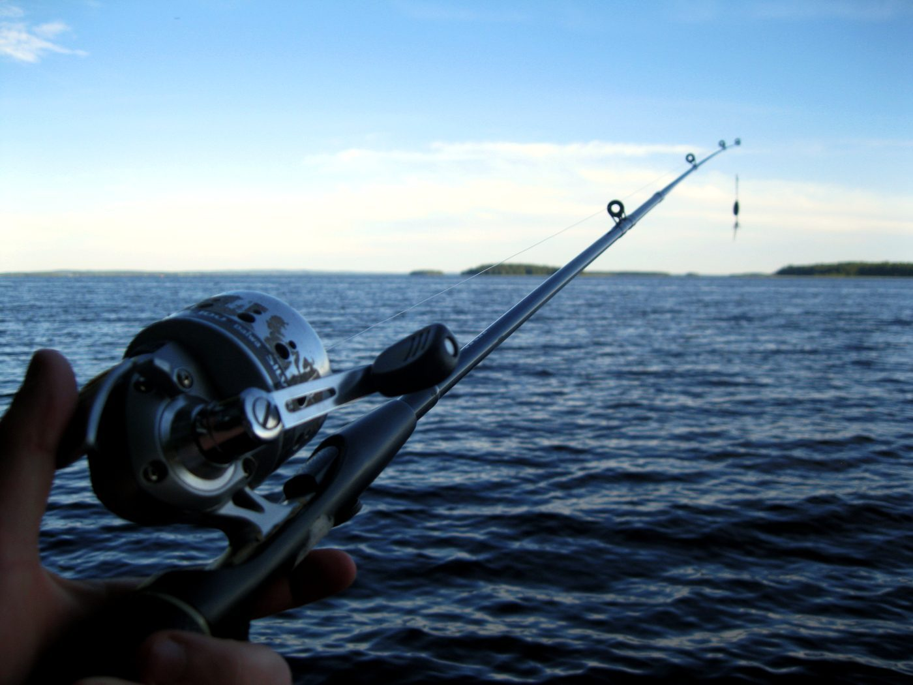
낚싯대(로드) 종류 & 선택 가이드
| 종류 | 길이·액션 | 용도 |
|---|---|---|
| 찌낚시대(릴찌대) | 4.5~5.3m, 1~2호(연질~중경질) | 감성돔·참돔 등 구멍찌 채비 운용 |
| 루어대 | 6~9ft, UL(초경량)~M(미디엄) | 볼락·배스 등 루어 캐스팅·액션 |
| 원투대 | 3.6~4.5m, 3호 이상(경질) | 무거운 봉돌을 멀리 캐스팅 |
| 지깅대 | 5~6.5ft, 강한 허리 파워 | 메탈지그 운용, 강한 어종 파이팅 |
| 민물대(붕어대) | 3.6~5.3m(12~18칸), 릴 없음 | 저수지 바닥낚시, 대물낚시는 더 긴 대 |
액션(강도)이란 로드가 휘는 정도를 말하며 연질(UL/L)일수록 예민하고 작은 입질을 잘 전달하지만 큰 힘을 받기 어렵고, 경질(H)일수록 강한 어종·원투에 유리하지만 예민함은 떨어집니다. 처음 시작할 땐 특정 어종 전용대보다 범용성이 좋은 중경질(ML~M) 로드 1대로 시작해 경험이 쌓이면 전용 장비를 늘려가는 것이 일반적인 추천입니다.
릴의 종류 & 선택 가이드
| 종류 | 특징 | 추천 대상 |
|---|---|---|
| 스피닝릴 | 로드 아래쪽에 장착, 스풀이 로드와 수직으로 회전. 구조가 단순해 라인 꼬임이 적음 | 범용·초보자, 찌낚시·라이트 루어 |
| 베이트릴 | 로드 위쪽에 장착, 스풀이 로드와 일직선으로 회전. 감도가 좋으나 백래시(줄 엉킴) 주의 필요 | 돌돔·배스·가물치 등 강한 어종, 원투·배낚시 |
| 전동릴 | 버튼으로 자동으로 줄을 감아올림 | 지깅·심해 배낚시 등 수심이 깊은 낚시 |
릴 번호(2500, 3000, 4000…)는 크기와 줄 감기는 양을 나타내며, 숫자가 클수록 크고 강합니다. 찌낚시·루어낚시는 2500~3000번, 원투·배낚시는 4000번 이상이 일반적입니다. 초보자는 드랙 조절이 쉬운 스피닝릴로 시작하는 것이 권장됩니다.
릴 셋팅 — 줄감기 & 드랙 조절
쇼크리더 사용법
쇼크리더는 가늘고 잘 늘어나지 않는 PE(합사) 원줄 끝에 연결하는 나일론·카본 목줄로, 캐스팅 순간의 충격을 흡수하고 물속에서 덜 보이게 하며 바위·이빨에 의한 마모를 줄여줍니다. 원투낚시는 12호 내외로 굵게, 루어낚시는 대상어에 맞춰 2~5호를 씁니다. 연결은 FG노트가 표준이며(강도 90~95% 유지), 매듭법은 위 매듭법 알아두기 표를 참고하세요.
미끼를 바늘에 꽂는 법
| 미끼 | 꿰는 법 |
|---|---|
| 지렁이(청·참갯지렁이) | 바늘을 머리 쪽부터 넣어 몸통을 따라 조금씩 밀어 넣는다. 여러 마리를 꿸 때는 마지막 한 마리만 이탈 방지로 두 번 꿰어 투척. 체액이 빠진 지렁이는 유인 효과가 떨어지므로 싱싱한 것을 사용 |
| 크릴(냉동새우) | 꼬리 쪽에서 바늘을 넣어 머리 방향으로 살짝 관통시키는 것이 기본. 통째로 꿰면 자연스러운 움직임이 유지됨 |
| 생새우 | 입질이 약하면 등쪽을 살짝 꿰어 새우가 계속 움직이게 하고, 입질이 없으면 머리 일부·앞발을 제거해 체액을 흘려 유인력을 높임 |
| 웜(루어) | 지그헤드 바늘을 웜 머리 중앙에 일직선으로 찔러 넣어 몸통이 휘지 않고 일자로 펴지게 꽂는 것이 기본(휘어지면 액션이 부자연스러워짐) |
매듭법 알아두기
모든 매듭은 조이기 전 물이나 침으로 반드시 적셔야 합니다 — 마른 상태로 급하게 조이면 마찰열로 라인 강도가 최대 30%까지 떨어집니다.
| 매듭 | 용도 | 묶는 순서(핵심) |
|---|---|---|
| 클린치노트 (개선형) | 바늘·도래에 원줄·목줄을 직접 묶는 가장 기본 매듭 | 아이(구멍) 통과 → 본선에 6회 감기 → 첫 고리에 통과 → (개선형) 큰 고리에 한 번 더 통과 후 조임 |
| 유니노트 | 나일론·카본 라인으로 바늘·도래·릴 스풀 연결. 가장 배우기 쉬운 범용 매듭 | 아이에 통과시켜 루프 생성 → 루프 안으로 본선+짧은줄 함께 4~5회 감기 → 조여서 밀착 |
| 8자매듭·루프노트 | 도래가 자유롭게 회전하는 여유 고리를 만들어 꼬임 방지 | 도래를 줄에 끼움 → 본선에 3~4회 감기 → 처음 루프에 통과시켜 조임 |
| 파로마노트 | 합사(PE) 결속 시 사실상 필수. 강도 최대 95% 유지 | 줄을 반으로 접어 두 겹으로 아이 통과 → 헐거운 반매듭 → 바늘을 고리에 통과 → 아이까지 밀어 올려 조임 |
| 더블 유니노트 | 굵기가 다른 원줄-목줄을 직접 연결(강도 약 80~85%, 초보자 추천) | 두 줄을 겹쳐 각자 상대 줄에 유니노트를 만든 뒤 서로 당겨 맞물림 |
| FG노트 | PE 원줄과 나일론/카본 쇼크리더 연결. 원투·루어낚시 표준(강도 90~95%) | 두 줄을 X자로 교차 → PE 단선으로 리더를 15~20회 촘촘히 감기 → 하프히치로 고정 → 여분 절단 |
매듭 영상: 유니노트 묶는법 · FG노트(쇼크리더 연결) 가장 쉬운 방법
채비 조립 순서
찌낚시(반유동) 채비 조립 순서 — 위에서 아래로 원줄에 끼워 나갑니다
찌낚시(반유동) 채비 — 9단계
- 면사매듭 — 원줄에 묶어두는 수심 기준점(스토퍼)
- 반달구슬 — 매듭 보호용 완충 쿠션
- 구멍찌(어신찌) — 원줄에 자유롭게 끼움
- O형 쿠션고무 — 찌와 수중찌 사이 완충
- 수중찌 — 채비 부력을 중립으로 맞춤
- V형 쿠션고무 — 벌어진 쪽이 아래(도래 방향)
- 도래 연결(유니·클린치노트)
- 목줄 연결(카본 2호, 1m 내외)
- 바늘 결속(외걸이 매듭)
입문 세팅 원줄 나일론 2.5호 · 3B 구멍찌 · 목줄 카본 2호(1m) · 감성돔바늘 3호
원투낚시 채비 — 7단계
- 원줄 감기 — PE 4호 또는 나일론 6호, 200m 이상
- 쇼크리더 연결 — 나일론 12호·3~5m, FG노트
- 스냅도래 부착 — 현장 채비 교체 용이
- 봉돌 준비 — 육각봉돌 20호에 도래 결합
- 목줄①제작 — 카본 4호·30cm + 바늘(광어바늘 12호)
- 목줄②제작 — 첫 바늘 위 20~30cm에 하나 더(가지바늘)
- 최종 연결 — 봉돌도래→목줄도래→스냅도래 순
TIP 로드는 3호 이상(4.5m 전후), 릴 3000번 이상. 목줄은 원줄보다 한 단계 가늘게. 초보자는 가지바늘 여러 개보다 단순 외줄 채비로 시작.
봉돌 사용법
| 종류 | 용도 |
|---|---|
| 고정봉돌 | 줄에 직접 물려 고정. 민물낚시 등 전통적 방식 |
| 유동봉돌(구멍봉돌) | 줄이 구멍을 자유롭게 통과 — 원줄 교체 시 재사용 가능 |
| 좁쌀봉돌 | 목줄에 다는 소형 봉돌. "크기는 작게, 개수는 적게"가 원칙 — 바늘 쪽에 가깝게 달아야 목줄이 자연스러운 각도(약 45도)로 흐름 |
| 육각봉돌 | 원투(캐스팅) 채비 표준. 바닥 고정력이 좋음 — 초보자는 20호 추천 |
무게 선택: 수심이 깊고 조류가 강할수록 무거운 호수를 씁니다. 여밭(암초)이 많으면 봉돌을 도래 쪽(위)에 배치해 밑걸림을 줄이고, 저수온·강한 조류에는 바늘 쪽(아래)에 배치합니다.
도래 사용법
| 종류 | 역할 |
|---|---|
| 일반도래 | 원줄-목줄 연결, 회전으로 줄 꼬임 방지 |
| 스냅도래 | 개폐 가능한 고리가 있어 현장에서 채비·루어를 빠르게 교체 |
| 핀도래 | 주꾸미 낚시 등에 사용(보통 10호 전후), 부식 우려로 1회 사용 권장 |
도래 호수는 숫자가 작을수록 크고 강합니다. 봉돌 20~30호급이면 도래 2~4호가 일반적으로 매칭됩니다.
낚시 액세서리 활용법
| 액세서리 | 사용 팁 |
|---|---|
| 편광선글라스 | 수면 반사광 차단. 브라운 렌즈는 얕은 물·맑은 날, 그레이 렌즈는 깊은 물·강한 햇빛에 적합 |
| 뜰채(랜딩넷) | 그물을 미리 물속에 담가둔 뒤 물고기를 유도해 넣으면 실패가 적음 |
| 바늘빼기(디스고저) | 줄을 팽팽히 잡고 머리 부분을 바늘 쪽으로 밀어 넣은 뒤 살짝 눌러 제거 — 물고기 손상 최소화 |
| 라인커터/가위 | 매듭 마무리·목줄 교체용. 핀온릴로 조끼에 부착해두면 분실 방지 |
| 쿨러백/아이스박스 | 전체 용량의 1/3~1/2을 얼음으로 채우고, 어획물이 얼음에 직접 닿지 않게 깔판 사용. 얼음은 위쪽에 두는 것이 냉기 유지에 유리 |
| 헤드랜턴 | 야간낚시(갈치·갑오징어·볼락) 필수. 양손이 자유로워 채비 교체에 유리 |
출조 가방 꾸리기
가방을 용도별로 나눠 싸면 현장에서 헤매지 않습니다.
배낚시·체험은 대여 범위(로드·릴만인지, 구명조끼·미끼까지 포함인지)를 예약 전에 확인하세요.
장비 손질 · 보관법
체험·배낚시 문의 메시지 예시
처음 예약할 땐 무엇을 물어야 할지 막막하기 마련입니다. 아래처럼 한 번에 물어보면 됩니다:
"○월 ○일 성인 ○명·어린이 ○명, 모두 초보입니다. 가능한 체험(또는 출조)과 실제 집결 주소, 입장·종료 시각, 대여품·개인 준비물, 총요금과 기상 취소 기준을 알려주세요. 낚시라면 봉돌·바늘·미끼 규격도 부탁드립니다."
낚시터·포인트 상세
물때와 낚시 포인트는 바다타임(전국 500여 지역 물때·바다날씨·2,000여 낚시 포인트)에서 확인하는 것이 표준입니다. 앱으로는 한국낚시포인트, 피싱노트, 어신 등이 지도 기반 포인트·조황·화장실 위치까지 표시합니다. 자세한 물때 읽는 법은 물때 캘린더 섹션을 참고하세요.
| 유형 | 대표 지역 | 특징 |
|---|---|---|
| 갯바위(원도) | 여수 거문도·백도, 통영 추봉도·법항리, 완도·소안권, 추자도(제주) | 감성돔·벵에돔·참돔·돌돔의 성지. 배로 진입, 난이도 높아 중급자 이상 권장 |
| 방파제(입문용) | 인천 연안부두·소야도, 부산 다대포, 속초항·동명항 | 수심 얕고 편의시설(화장실·안전난간) 잘 갖춰져 가족 단위·초보자에 적합 |
| 배낚시 출항지 | 인천 옹진군(남항·만석부두), 태안 신진도·안흥항, 여수 국동항, 통영 영운리항 | 우럭·갑오징어·주꾸미 등 계절 출조. 대부분 온라인 예약 가능 |
| 민물(붕어·배스) | 예당저수지(예산), 충주호, 대청호, 소양호(춘천) | 예당저수지는 국내 최대급 저수지, 충주호는 배스 명당으로 유명 |
| 관리형(향어터) | 안성 독정낚시터·성은낚시터, 음성 봉낚시터 | 시설이 잘 갖춰진 유료 낚시터. 방갈로·취사장 등 편의시설 보유 |
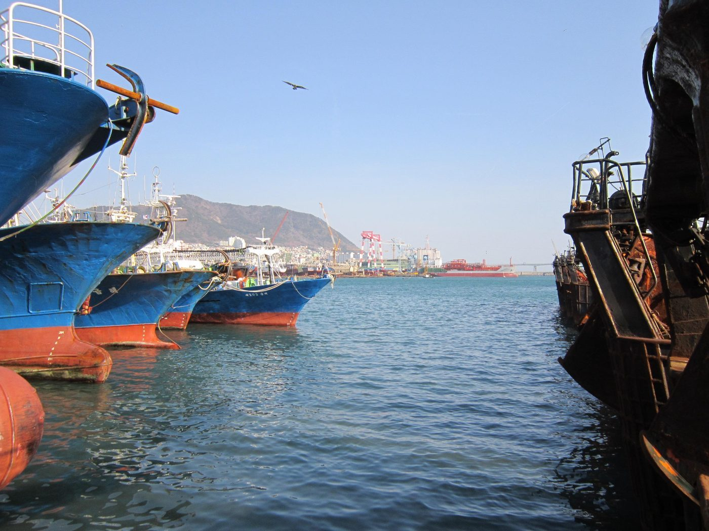
선상낚시 예약 방법
예약 플랫폼(어바웃피싱, 선상24, 더피싱)에서 ① 지역·항구 선택 → ② 날짜·출항시간 설정 → ③ 선박 확인 → ④ 결제 순으로 예약합니다. 출항 30분 전 도착해 승선명부를 작성하고, 신분증과 구명조끼는 대부분 필수입니다. 비용은 반나절 체험형 기준 1인 약 3만~6만원(시즌·지역별 변동), 장비 대여는 별도(약 1만원)인 경우가 많습니다.
계절별 낚시 캘린더
| 계절 | 주요 어종 | 대표 지역 |
|---|---|---|
| 봄(3~5월) | 감성돔(산란 회유), 볼락, 광어 | 완도·통영·거제, 인천 연안부두 |
| 여름(6~8월) | 돌돔(선상 원투), 벵에돔, 참돔 | 거문도·백도, 추자도, 통영 추봉도 |
| 가을(9~11월) | 감성돔·참돔(피크), 갈치·방어·전갱이 | 완도, 여수·통영 선상낚시, 남해안 전반 |
| 겨울(12~2월) | 대구, 열기, 볼락, 명태(강원) | 속초항·동명항, 남해안 방파제 |
배우기 좋은 곳
낚시누리(해양수산부·한국어촌어항공단 공식 교육 포털)는 어종별 낚시교실과 "초보 탈출하기" 코너, 현장 강습 신청까지 제공합니다. 채비 매듭법은 낚시누리 채비 필수 묶음법에서도 볼 수 있습니다. 전체 채널 목록은 배우고 나누기 참고.
해루질
본래 "밤에 얕은 바다에서 맨손으로 어패류를 잡는 일"을 뜻하는 서해안 방언. 지금은 낮·밤을 가리지 않고 갯벌·갯바위에서 조개·낙지·게를 도구 없이, 또는 간단한 도구로 채집하는 활동 전체를 이릅니다.
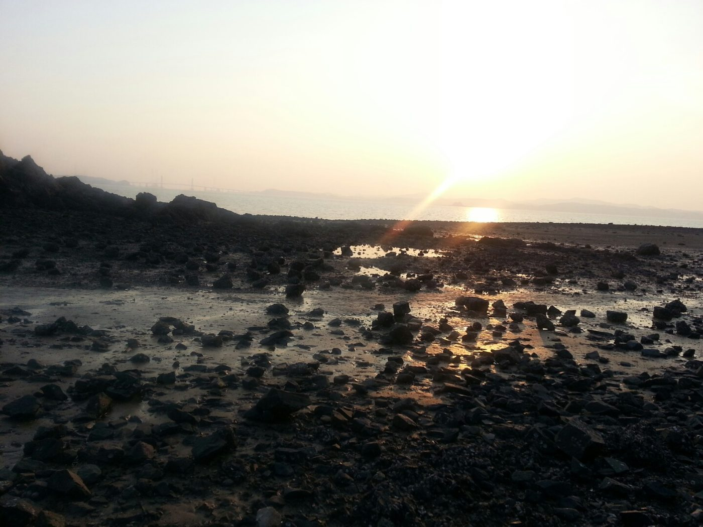
갯벌형 vs 암반형
갯벌형은 서·남해의 평탄한 간석지에서 진행하며 바지락·맛조개·동죽·낙지·게가 대상입니다. 암반(갯바위)형은 바위 조간대에서 소라·전복·성게·해삼·고둥을 노립니다. 동해는 수심이 깊고 갯벌 노출 면적이 적어 상대적으로 부적합합니다.
필요 장비 (우선순위 순)
해루질 필수 장비 우선순위 — 안전장비(랜턴·구명조끼)부터 챙기세요
대상 생물과 채집법
| 생물 | 포인트 | 방법 |
|---|---|---|
| 낙지 | 갯벌 숨구멍(부럿)에서 물이 뽀얗게 올라오는 자리 | 구멍 각도를 가늠해 10~15cm 삽으로 파내려가 포획 |
| 문어 | 암반 조간대 바위 틈 | 헤드랜턴으로 틈을 비춰 탐색 후 손·집게로 포획 |
| 소라·전복 | 바위 뒤·틈새 | 바위를 뒤집어 탐색, 전복은 전용 칼로 살짝 떼어냄(소형은 방류) |
| 꽃게·박하지(돌게) | 갯벌·바위틈, 가을(9~10월) 성행 | 랜턴 빛에 반응해 뜬 개체를 족대로, 돌게는 바위틈에서 손으로 |
| 바지락·동죽·개조개 | 갯벌 표층~10cm 아래 | 호미·조개갈퀴(그레)로 파내거나 끌며 감촉으로 위치 파악 |
| 맛조개 | 모래 갯벌의 맛구멍 | 굵은 소금을 구멍에 뿌리면 삼투압으로 튀어나옴 → 즉시 집기 |
| 굴·해삼·성게 | 암반 조간대 | 손·집게로 채취, 장갑 필수 |
물때와 시즌
사리(대조기)에는 갯벌 노출 면적이 최대가 되어 채집 효율이 가장 좋고, 조금(소조기)에는 효율이 절반 이하로 떨어집니다. 간조 1시간30분~2시간 전 진입 → 간조를 반환점으로 즉시 철수가 기본 원칙입니다. 서해 기준 5~9물 무렵이 최적기입니다.
해루질·갯벌체험 안전 타임라인 — 간조를 반환점으로 삼아 계획하세요
| 시기 | 주요 대상 | 비고 |
|---|---|---|
| 3~5월(봄) | 바지락·동죽·개조개 | 수온이 오르며 조개가 갯벌 표층으로 올라옴 |
| 5~7월 | 바지락·낙지·조개류 집중 | 해루질 시즌 본격 시작, 가장 활발한 시기 |
| 6~8월(여름) | 박하지(돌게)·소라·낙지 | 야간 해루질 권장, 랜턴 필수 |
| 9~11월(가을) | 낙지(제철)·소라·굴 | 초가을이 초여름과 함께 최적기 |
| 12~2월(겨울) | 굴(석화)·바지락 | 참가자 적어 한산하나 추위로 난이도 높음 |
지역별 포인트 더 보기
| 지역 | 특징 | 주요 채집물 |
|---|---|---|
| 서산 웅도(충남) | 평지 지형으로 이동 편리, 가족 단위 방문 多 | 다양한 조개류, 낙지 |
| 화성 제부도(경기) | 하루 두 번 바닷길 개방. 밀물 속도가 빨라 고립사고 다발 — 각별 주의 | 바지락, 쏙, 낙지, 갯지렁이 |
| 인천 무의도 하나개해변 | 공항 인근 접근성 최고, 모래+암반 혼합 지형 | 대왕소라, 박하지(돌게), 바지락 |
| 인천 영흥도(노가리·수해해변) | 수도권 "국민 해루질 장소", 두 해변 채집물이 다름 | 꽃게·키조개·쭈꾸미 / 바지락·굴·고둥 |
| 고흥 연호해변(전남) | 갯벌+암반 혼합, 한적한 남해안 | 바지락, 소라, 굴 |
| 여수 묘도(전남) | 다리로 연결된 작은 섬, 차량 접근 가능 | 바지락, 소라, 굴 |
| 여수 거문도(전남) | 배로 2시간, 청정 해역의 국내 최고 명소 중 하나 | 소라, 해삼, 문어 |
안전 & 법규 요약
비어업인이 쓸 수 있는 도구는 호미·뜰채·외갈고리(날 1개)·손 등으로 한정되며, 잠수용 공기통이나 두발갈고리 등은 불법입니다. 어촌계가 관리하는 마을어장에서는 무단 채집이 금지되고, 금어기·금지체장을 어기면 비어업인도 과태료·벌금 대상이 됩니다. 2027년 4월 시행 예정 개정안은 지자체가 해루질의 시간·장소까지 조례로 제한할 수 있게 합니다 — 자세한 내용은 안전·법규 섹션 참고.
초보자가 실수하기 쉬운 5가지
- 물때·밀물 시간을 얕보는 것 — "이렇게 빨리 들어올 줄 몰랐다"가 사고의 공통 원인. 간조 2~3시간 전 진입, 밀물 전환 즉시 철수.
- 갯골(물길) 원정 — 밀물 때 가장 먼저·깊게 잠기는 물길. 들어올 때 얕았던 갯골이 나갈 때 허리 깊이가 될 수 있어 건너편으로 넘어가지 말 것.
- 혼자 야간 해루질 — 2인 이상 동행이 기본, 단독 야간 활동은 매우 위험.
- 장비 소홀 — 헤드랜턴(예비 포함 2개 이상), 장화, 장갑(꽃게 등은 맨손 채집 시 반사적으로 물릴 위험), 구명조끼·호루라기 누락.
- 마을어장·금어기 무시 — 표식 없는 갯벌도 어촌계가 관리하는 종패 살포 구역일 수 있어 무단 채취는 절도에 해당할 수 있음.
다이빙 & 스피어피싱
물속에 직접 들어가 관찰하거나 채집하는 활동. 장비와 자격 체계가 가장 정교한 만큼, 국내에서는 법적 규제도 가장 엄격합니다.
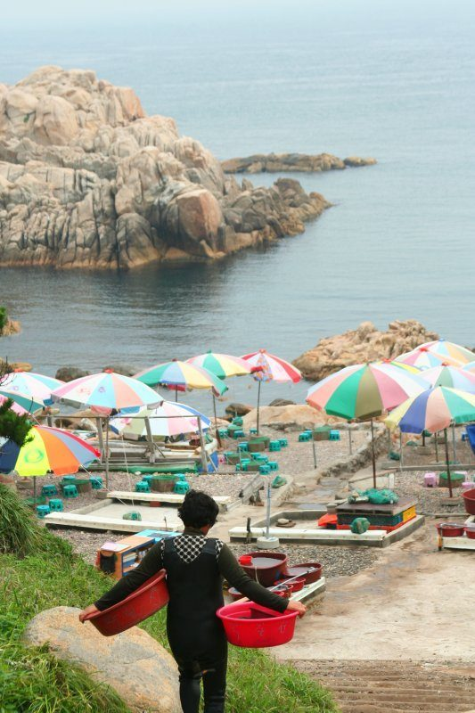
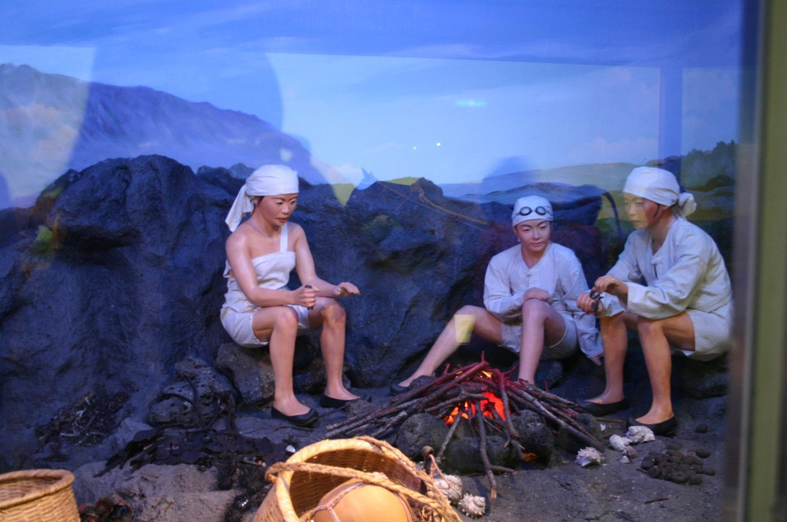
⚠ 반드시 먼저 읽기 — 국내 스피어피싱은 원칙적으로 전면 불법
수산자원관리법 시행규칙 제6조는 비어업인이 사용할 수 있는 도구를 투망·쪽대·외줄낚시·집게·호미·손 등으로 한정하며, 작살(스피어건 포함)과 잠수용 스쿠버 장비는 명시적으로 금지합니다. 이 규정은 헌법재판소 2016헌마450 결정에서 합헌으로 확정됐고, 실제로 2019년 태안에서 작살로 광어를 잡아 유튜브에 올린 유튜버가 벌금형(최대 1,000만원 이하)에 처해진 사례가 있습니다. 내수면(강·호수)에서도 내수면어업법으로 작살류·스쿠버 장비 사용이 금지됩니다. 스킨다이빙으로 손·집게 등 허용 도구만 쓰는 경우가 상대적으로 규제 소지가 적지만, 나잠어업 허가 없이 마을어장에서 채집하면 이 역시 위법입니다.
종류 구분
| 구분 | 정의 | 주요 장비 |
|---|---|---|
| 스킨다이빙 | 공기통 없이 마스크·스노클·핀만으로 수면 근처를 탐험 | 마스크, 스노클, 핀 |
| 프리다이빙(자유잠수) | 숨을 참고 잠수하는 스포츠. 깊이·시간 기록이 목표가 되기도 함 | 마스크, 롱핀, 웨이트 |
| 스쿠버다이빙 | 공기통을 메고 장시간·깊은 수심 잠수. 이론-수영장-바다 3단계 교육 | BCD, 레귤레이터, 탱크, 슈트 |
| 스피어피싱(작살낚시) | 작살·스피어건으로 찔러 포획하는 어로 기법 | 폴스피어, 하와이안 슬링, 스피어건 — 국내 사용 전면 불법 |
필요 장비
스쿠버다이빙 기본 장비 구성 — 스킨·프리다이빙은 마스크·스노클·핀 3종만 사용
자격증 · 교육 과정
스쿠버다이빙은 PADI(세계 최대), SSI, CMAS 등이 오픈워터→어드밴스드→레스큐→다이브마스터 순으로 인증합니다. 프리다이빙은 AIDA·CMAS·PADI·SSI 등에서 입문 레벨부터 발급합니다.
| 단계 | 내용 | 소요 |
|---|---|---|
| ① 이론 교육 | 온라인(e-러닝) 또는 교재로 챕터별 학습·퀴즈 | 약 3시간 |
| ② 제한수역(풀) 교육 | 수영장에서 장비 사용법·기초 스킬 실습 | 5회 |
| ③ 개방수역(바다) 실습 | 실제 바다·호수에서 지도강사 감독 하 다이빙 | 4회 |
| 총 기간·비용 | 연속 교육 기준(2박3일 집중반 흔함), 응시조건 만 10세 이상+수영 가능 | 3~4일 · 약 50만~90만원 |
취득 후 수심 18m까지 전 세계 바다에서 스쿠버다이빙이 가능합니다. 교재비·발급비·보험 포함, 장비 렌탈은 별도인 경우가 많습니다.
합법적으로 채집하는 유일한 길 — 나잠어업 허가
해녀처럼 지역 어촌계의 나잠어업 허가(신고)를 받은 경우에 한해 산소통 없이 수중 채취가 합법입니다. 일반인이 다이빙으로 전복·소라·해삼 등을 합법적으로 접하는 방법은 사실상 허가 지역의 체험 다이빙이나 관찰 위주 투어입니다.
인기 다이빙 포인트 (관찰·촬영 목적)
- 제주도 — 범섬, 문섬, 섭섬(해양보호구역). 누디브랜치·전복·씬벵이 등 풍부한 생태
- 울릉도 — 삼선암, 관음도 쌍굴, 쌍정초(혹돔·볼락 무리)
- 동해안 — 고성·속초·양양·강릉·울진, 적기는 6월 중순~11월 중순
- 삼척 장호항·갈남항 — "한국의 나폴리"로 불리는 잔잔한 바다, 초보자 프리다이빙에 적합
- 부산 오륙도 — 도시 인근에서 접근 가능한 절벽 지형
- 여수 웅천 — 조류가 적어 고요한 프리다이빙 환경
프리다이빙 vs 스쿠버 — 무엇을 배울까
| 구분 | 프리다이빙 | 스쿠버다이빙 |
|---|---|---|
| 공기 공급 | 자신의 폐에 저장한 공기만 사용 | 공기통 사용, 30분~1시간 체류 |
| 장비 | 마스크·스노클·롱핀·웨이트(경량) | BCD·호흡기·탱크(중장비) |
| 주 목적 | 정적 잠수시간·심도 도전, 자유로운 이동 | 장시간 관찰·탐험 |
| 체력 부담 | 호흡·심박 훈련 필요, 부담 큼 | 부력만 익히면 상대적으로 수월 |
미니멀 장비로 자유롭고 정적인 몰입을 원하면 프리다이빙, 장시간 수중 관찰·탐험을 원하면 스쿠버가 적합하다는 것이 공통된 가이드입니다.
안전 · 보험
감압병은 급격한 상승·반복 다이빙·음주가 위험요인이며, 다이빙 컴퓨터의 무감압한계(NDL)와 안전정지를 지키는 것이 기본입니다. 여행자보험은 통상 다이빙 사고를 보장하지 않으므로, 레크리에이션 다이빙 상해를 별도로 보장하는 다이빙 전용 보험 가입이 권장됩니다.
갯벌 체험
어촌계가 운영하는 체험마을에서 호미·갈퀴를 빌려 정해진 구역에서 조개를 캐는, 가장 안전하고 접근하기 쉬운 방식입니다. 우리 식탁 해산물의 3분의 2 이상이 갯벌을 거쳐 갑니다.
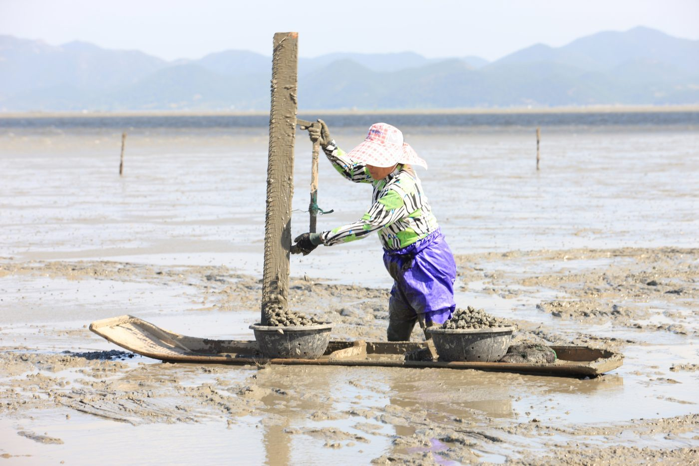
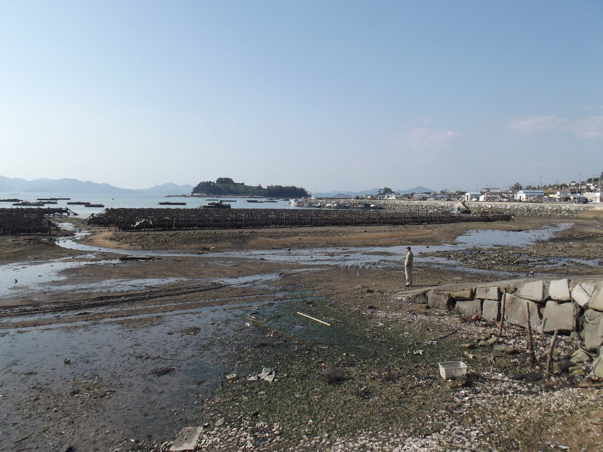
체험 유형
어촌체험마을형은 입장료·체험비를 내고 도구를 대여받아 정해진 구역에서 채집하는 공식 프로그램입니다. 자율 채집(개방형)은 별도 운영 주체 없는 공유수면에서 이뤄지지만, 마을어장(어업권 구역)인 경우 비어업인의 채집이 제한될 수 있습니다.
필요 장비
조간대 단면 — 육지에서 먼바다로 갈수록 만나는 생물이 달라집니다
맛조개 잡는 법 — 소금 기법
- 갯벌 표면의 작은 구멍(맛구멍)을 찾는다.
- 굵은 소금을 구멍 안에 뿌린다.
- 삼투압 변화로 맛조개가 스스로 튀어나온다 — 지체하면 다시 들어가므로 즉시 핀셋이나 젓가락으로 집는다.
- 몇 번 뿌려도 반응이 없으면 빈 구멍이다.
전국 대표 체험 지역
| 지역 | 특징 |
|---|---|
| 태안 (충남) | 별주부마을 등 전통 독살 체험, 다수의 어촌체험마을 |
| 화성 궁평리 (경기) | 완만한 경사, 바지락·동죽·굴·낙지가 풍부, 낚시·보트 체험 병행. 궁평항로 1069-17, 031-356-7339 |
| 강화도 (인천) | 동막해변, 황산도, 강화남단갯벌(천연기념물 419호) |
| 신안 (전남) | 증도·임자면, 낙지잡이로 유명, 유네스코 세계자연유산 갯벌 |
| 보성·벌교 (전남) | 뻘배 꼬막채취 어업 — 전국 꼬막 생산량의 70% |
| 인천 마시안갯벌체험장 | 영종도 인근. 개인은 현장 매표소 당일결제, 단체는 사전 전화예약(032-746-3093) |
| 보령 무창포어촌체험마을 (충남) | 한 달 4~5차례 열리는 "신비의 바닷길", 석대도까지 약 1.5km 도보 이동. 전통 독살체험 가능 |
| 서천 선도리갯벌체험마을 (충남) | 바닥이 단단한 모래 지형이라 덜 젖고 날카로운 조개가 적어 어린이 체험에 적합 |
| 고창 만돌어촌체험휴양마을 (전북) | 유네스코 세계유산 고창갯벌 내 위치(약 6km). 천일염 체험 병행 |
| 진도 회동리 (전남) | "신비의 바닷길"(회동리~모도 2.8km)이 열리는 명소, 축제 기간 외 상설 체험관 운영 |
운영 정보는 어촌해양본부(한국어촌어항공단)가 전국 121개 마을을 소개하며, 개별 예약은 바다여행(seantour.kr)에서 진행합니다.
예약 전 체크리스트
- 운영일·물때 — 간조 시간대에 맞춰 체험 가능 시간이 정해짐
- 예약 방식 — 개인은 현장 당일결제만 가능한 곳이 많고, 단체는 사전 전화예약 필수인 경우가 일반적
- 입장료 — 대인/소인/미취학 아동 요금이 다름(예: 대인 1만원·소인 5천원 수준)
- 장비 대여 여부·비용 — 장화(약 2천원)·가슴장화(약 5천원)·호미·소쿠리 등, 업체마다 유무상 상이
- 반입 가능 도구 제한 — 개인 그물·투망 등의 반입 가능 여부는 업체별로 다름
- 채취물 반출 규정 — 일부는 현장 구이·회로 먹거나 가져갈 수 있음을 명시
문의 전화를 걸 때 뭘 물어야 할지 막막하다면 낚시 챕터의 문의 메시지 예시를 그대로 활용해도 좋습니다.
갯벌 생물 손질·보관법
물때 계획
체험은 보통 최대 간조 시각 전후 2시간이 적기이며, 대부분 마을이 사전 예약제입니다. 밀물 속도는 시속 7~15km로 사람 걸음보다 2~3배 빨라 갯골에 고립되는 사고가 잦으니, 국립해양조사원 스마트 조석예보로 반드시 시간을 확인하세요.
어종별 채비 가이드
14개 인기 어종의 로드·릴·낚싯줄·채비 구성과 실전 팁을 모았습니다. 수치는 출처마다 조금씩 달라 표준적으로 가장 흔한 값을 기준으로 정리했으니, 태클숍에서 현장 조건(수심·조류)에 맞춰 조정하세요.
찌낚시 감성돔
| 로드 | 찌낚시 전용대 1.5~2호 · 5.3m 전후 |
| 릴 | 스피닝 2500~3000번 |
| 낚싯줄 | 원줄 나일론 2~3호 · 목줄 카본 1.2~2호 |
| 채비 | 바늘 2~5호(기본 3호) · 구멍찌 0.5~2호 · 목줄 길이 1.5~3m(조류 따라 조절) |
| 미끼 | 크릴(기본), 깐새우, 게, 참갯지렁이 |
TIP 곶부리·수중여 등 조류가 흐르는 자리를 노리고, 찌가 2~3초 지속적으로 빨려들어갈 때 챔질(게 미끼는 한 박자 늦게).
찌낚시·카고 참돔
| 로드 | 카고낚시 2~3호대, 이카다는 유연한 참돔 전용대 |
| 릴 | 중형 스피닝 4000~5000번(원줄 200m 감기는 사이즈) |
| 낚싯줄 | 원줄 나일론 3~5호 · 목줄 2~5호, 길이 3.5~4m |
| 채비 | 바늘 10~12호 · 카고봉돌 수심 10m당 20~30호 · 구멍찌 1.5~5호 |
| 미끼 | 크릴 중심 |
TIP 조류에 채비를 태워 멀리 흘리는 원투식 운용. 남해는 4~6월 대물, 7~8월은 마릿수 시즌.
루어 농어
| 로드 | 워킹 시버스로드 8~10ft, 근해는 3.6~6.3m 경질대 |
| 릴 | 스피닝 2500~4000번(근해 표준 3500~4000번) |
| 낚싯줄 | PE 1~2호(표준 1.5호) + 쇼크리더 카본 2~3호 |
| 채비 | 지그헤드+웜, 미노우·바이브레이션·탑워터 플러그 |
| 미끼 | 봄·가을 미노우 / 여름 탑워터 / 겨울 바이브레이션 |
TIP 조류와 베이트피시가 몰리는 지점이 핵심. 최적 시즌은 5~6월(수온 15~22도), 가을엔 일교차 커질 때 폭발적 입질.
루어 광어(넙치)
| 로드 | 선상 다운샷 전용대, 60~100g 싱커 대응 |
| 릴 | 스피닝 3000~4000번 또는 베이트릴 150~200급 |
| 낚싯줄 | PE 1.2~1.5호 + 쇼크리더 카본 3~5호 |
| 채비 | 다운샷리그(오프셋훅 2/0~3/0+웜, 훅-싱커 단차 25~35cm) · 싱커 20~40호 |
| 미끼 | 섀드테일·스트레이트 웜 4인치(저수온엔 어두운 색, 맑은 날 밝은 색) |
TIP 바닥 콘택 유지가 핵심 — 3초 드래깅→1초 정지→살짝 리프트 후 2초 폴링 반복. 물돌이 시간이 골든타임.
선상·루어 우럭(조피볼락)
| 로드 | 선상 2.1~2.5m 경질 외줄대 / 루어 7~8ft L~ML |
| 릴 | 선상 베이트(장구통) 100~150번 또는 스피닝 4000~5000번 / 루어 2500번대 |
| 낚싯줄 | 선상 합사 6호+기둥줄 10호, 목줄 3~4호 / 루어 PE 1.5~2호 |
| 채비 | 바늘 12~18호, 봉돌 12~30호(선상) · 다운샷 봉돌 4~5호, 단차 30~60cm |
| 미끼 | 참갯지렁이·청갯지렁이·새우(생미끼), 2~3인치 웜 |
TIP 암초·인공어초 지대 수심 10~100m, 성수기 4~6월. 루어는 바닥까지 카운트다운 후 톡톡 튕기듯 호핑. 23cm 미만은 방류.
루어(락피싱) 볼락
| 로드 | UL~ML 액션 6.8~7.6ft, 초릿대 선경 0.7~0.8mm |
| 릴 | 스피닝 1000~2000번, 저속 기어비 선호 |
| 낚싯줄 | PE 0.2~0.6호 + 쇼크리더 카본 1~2호 |
| 채비 | 지그헤드 0.6~2g(활성 좋을 때 0.6~0.8g) · 카드채비(봉돌+가짓줄 4~6개) |
| 미끼 | 볼락 전용 그럽·셀테일 웜 1.5~2인치, 야광·글로우 계열 |
TIP 초저녁~야간 집어등·방파제 조명 경계부 공략. 입질이 약하면 지그헤드를 더 가볍게(무거우면 이물감으로 흡입 안 함).
생미끼·지깅 갈치
| 로드 | 생미끼 릴찌대 4.5~5.3m / 지깅 7~8ft 라이트지깅대 |
| 릴 | 스피닝 3000~5000번, 심해는 전동릴 |
| 낚싯줄 | 원줄 나일론 3~5호 / 지깅 PE 0.8~1.2호+쇼크리더 카본 4호 |
| 채비 | 바늘 위 10~20cm 와이어 목줄(이빨 대비) 필수, 찌 0.5~1호, 집어등·케미라이트 부착 |
| 미끼 | 꽁치살·고등어살(소금 숙성) / 지깅은 메탈지그·텐야 |
TIP 강한 추광성이라 집어등이 핵심. 찌가 완전히 잠겨 안 보일 때까지 기다렸다가 챔질(너무 빠르면 헛챔질).
지깅·루어 삼치
| 로드 | 연안 미디엄 스피닝 7~8ft / 배낚시 지깅대 7~8ft |
| 릴 | 연안 4000~5000번 / 배낚시 5000~8000번 |
| 낚싯줄 | PE 0.8~1.5호(연안)·2.5~4호(배낚시) + 와이어 목줄 약 20cm(이빨 대비 필수) |
| 채비 | 메탈지그 20~40g(연안)·40~80g(배낚시) |
| 미끼 | 맑은 물엔 실버·블루 지그, 흐린 물엔 야광·레드/핑크 |
TIP 가을(8~11월, 10월 피크) 방파제·연안 접근. 삼치는 아래에서 위로 공격하므로 루어를 유영층보다 위로. 강하게 챔질해 확실히 걸 것.
에깅 갑오징어
| 로드 | 에깅 전용대 8.3~8.6ft, L~UL 액션 |
| 릴 | 소형 스피닝 1500~2000번 |
| 낚싯줄 | PE 0.6호 이하 + 카본 목줄 |
| 채비 | 다운샷 리그(에기 1개), 에기 1.5~2.5호, 봉돌 20g 내외, 삼각도래로 분리 |
| 미끼 | 수평 에기 — 맑은 물 내추럴 컬러, 흐린 물 야광 계열 |
TIP 자갈·암초 지형 우선(모래바닥 기피). 8월 시작, 9~10월 피크. 캐스팅 후 10초 이상 바닥에서 기다렸다 최대한 천천히 감기.
미니에기 주꾸미
| 로드 | 주꾸미 전용대 5ft 이내(짧고 예민할수록 챔질 유리) |
| 릴 | 소형 스피닝 또는 소형 베이트릴 |
| 낚싯줄 | PE 0.6~0.8호 + 카본 목줄 2~3호 |
| 채비 | 미니에기 1단 직결 채비, 봉돌 8~14호(수심·조류에 맞춰 한 번 정하면 유지) |
| 미끼 | 미니 에기 — 핑크·오렌지·레드 + 탁한 물엔 야광 혼합 |
TIP 수심 20~50m권 바위·조개 혼재 지형. 갑자기 묵직해지면 입질 — 서서히 텐션 유지하며 들어올릴 것(급히 채지 않기).
대형 에기 문어
| 로드 | 문어 전용대 1.5~1.8m(선상) / 방파제는 허리 힘 강한 원투대 |
| 릴 | 베이트릴 로우기어(선상) / 방파제는 릴 종류 영향 적음 |
| 낚싯줄 | PE 2~3호(선상) 또는 나일론 15~20호(방파제, 벽 마찰 대비) |
| 채비 | 대형 에기(왕눈이형) 3~4개, 호수 3.5~4호, 봉돌 30~50호 |
| 미끼 | 빨강·흰색 등 시각적으로 눈에 띄는 축광 에기(문어는 시각 포식자) |
TIP 시즌 7~9월 피크. 발밑 위주로 고패질하며 이동 탐색. 입질 후 5~6초 기다려 완전히 감싸게 한 뒤 강하게 챔질.
루어 배스
| 로드 | 초보 스피닝 6~6.6ft M파워, 숙련되면 베이트캐스팅 전환 |
| 릴 | 스피닝 2000~2500번 / 베이트 기어비 6.2:1(웜리그)~7점대(무빙루어) |
| 낚싯줄 | 스피닝 카본·나일론 4호 내외(6~10lb) / 베이트 12~16lb |
| 채비 | 텍사스·다운샷·네코·프리리그, 딥워터는 러버지그 |
| 미끼 | 스틱웜, 크랭크베이트, 스피너베이트, 탑워터(포퍼·버즈베이트) |
TIP 봄 산란기엔 얕은 수초대 다운샷·네코리그, 여름 아침저녁엔 탑워터. 수몰나무·브레이크라인 등 구조물 주변 집중 공략.
바닥·대물낚시 붕어
| 로드 | 카본 민물대(릴 없음) 3.6~4.5m가 표준, 대물낚시는 4.4~5.0칸 이상 장대 병행 |
| 릴 | 바닥낚시는 릴 미사용이 기본(다대편성) |
| 낚싯줄 | 원줄 나일론 2~3호 · 목줄 플로로카본 1.5~2호(대물은 나일론 2.5~4호) |
| 채비 | 바늘 9~14호, 막대찌·오뚜기찌, 표준 찌맞춤. 목줄 길이 10~20cm(대물은 25~30cm) |
| 미끼 | 지렁이(사계절 강세)>글루텐(입문 추천)>옥수수>새우 |
TIP 새벽·해질녘, 흐리거나 비 오는 날이 유리. 콩알떡밥은 찌올림이 둔해질 때, 지렁이는 흡입할 때까지 기다렸다 챔질.
떡밥·글루텐 향어
| 로드 | 향어 전용대(붕어대보다 강한 반발력) 13~21척(4~6.3m), 쌍포 운영 |
| 릴 | 바닥낚시는 릴 미사용이 기본(유럽식 중층찌낚시는 릴 사용, 확인 필요) |
| 낚싯줄 | 원줄 카본 3호 전후 · 목줄 케블라 3호, 길이 10~12cm |
| 채비 | 향어 전용바늘 13호 쌍바늘, 저부력 올림찌, 마이너스 찌맞춤(예민하게) |
| 미끼 | 어분 계열 집어제(어분10:물5) + 한쪽 바늘엔 글루텐 병행 |
TIP 향어 무리가 다니는 자리 선점이 절대적. 야간엔 케미가 오물거리다 살짝 떠오르는 순간 챔질.
※ 브랜드·모델명, 정확한 lb/호수 등 출처마다 편차가 큰 세부 수치는 현장 태클숍에서 다시 확인하는 것을 권장합니다.
영상으로 보기어종 · 생물 도감
낚시·해루질·다이빙·갯벌에서 만나는 대표 해양생물 40종. 금어기·금지체장은 매년 고시가 바뀌므로 해양수산부·국립수산과학원 최신 공지를 반드시 재확인하세요.
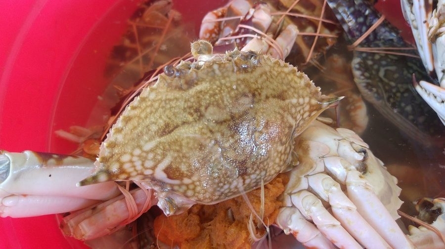
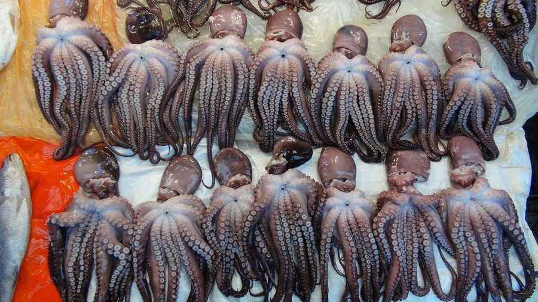
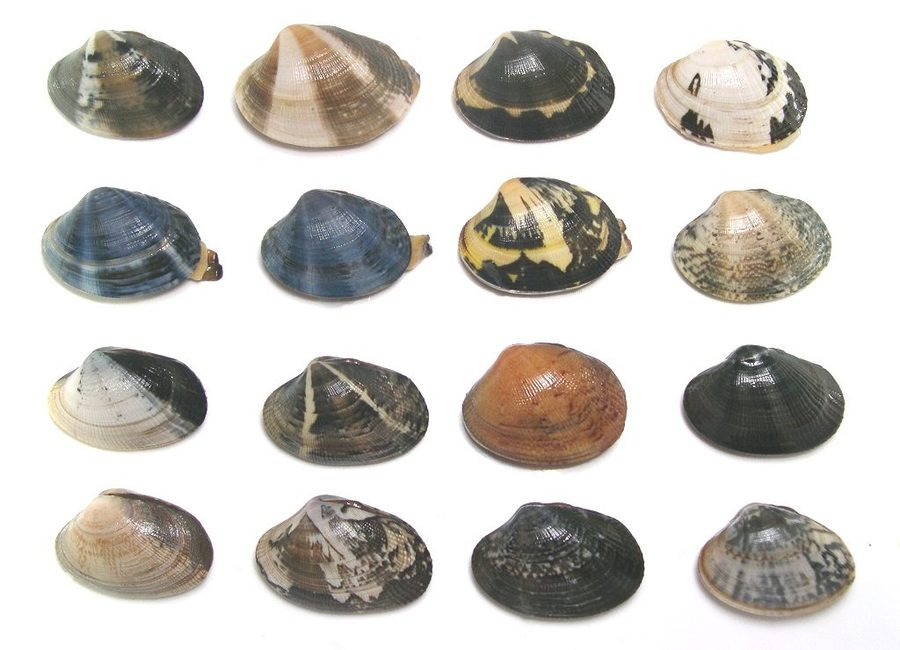
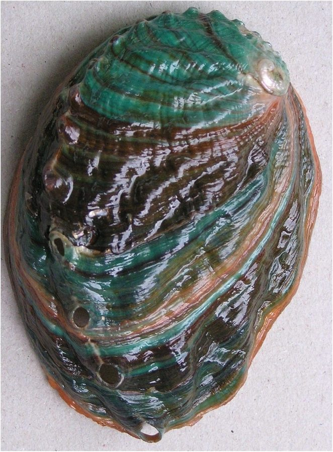
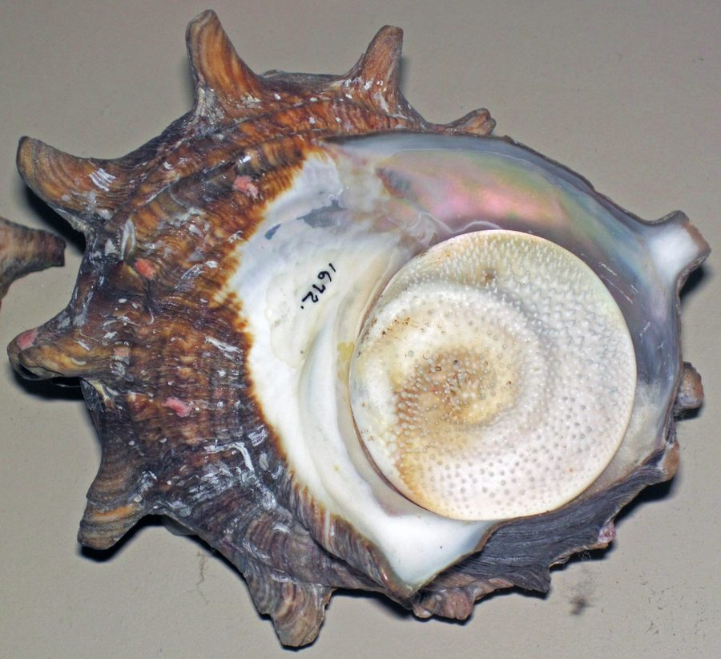
| 분류 | 이름 | 서식지 | 채집 시기·산란기 | 🍽 맛있는 시기 | 채집법 | 금어기 · 금지체장 |
|---|---|---|---|---|---|---|
| 어류 | 감성돔 | 연안 암초·기수역 | 가을~겨울(10월~), 산란 4~6월 | 가을~겨울(10~12월) | 낚시(찌낚시) | 금어기 5/1~5/31, 25cm |
| 어류 | 참돔 | 연안~근해 암초 | 봄·가을, 산란 4~6월 | 봄(3~5월, "벚꽃도미") | 낚시(타이라바) | 24cm |
| 어류 | 농어 | 연안 기수역·항만 | 5~10월 | 초여름(6~7월) | 루어낚시 | 30cm |
| 어류 | 광어(넙치) | 연안 모래바닥 | 4~5월, 가을~겨울 | 겨울(12~3월, 산란 전) | 낚시(다운샷) | 35cm |
| 어류 | 우럭(조피볼락) | 암초 지대 10~100m | 봄~가을 | 여름(6~8월) | 낚시(외줄·루어) | 23cm |
| 어류 | 볼락 | 암초·해조밭 | 겨울~봄 | 겨울~초봄(12~3월) | 루어(락피싱) | 15cm |
| 어류 | 갈치 | 남해~제주 | 8~9월 성수기, 겨울 대형 | 가을(9~10월) | 낚시(원투·외줄) | 금어기 7/1~7/31, 18cm |
| 어류 | 삼치 | 남해~서해 회유 | 8~10월 | 가을~초겨울(10~12월) | 지깅 | 금어기 5/1~5/31 |
| 어류 | 붕어 | 민물 저수지·강 | 봄 산란, 사계절 | 가을(9~10월, 씨알 최고) | 민물낚시 | 내수면 별도 규정 확인 |
| 어류 | 배스 | 민물 전역(생태교란종) | 연중 | 식용 비권장(외래 교란종) | 루어낚시 | 살아있는 재방류 금지·포획 권장 |
| 어류 | 전어 | 연안 내만·하구 | 산란 3월 중순~6월, 여름 외해·가을 내만 회귀 | 가을("가을전어", 9~10월) | 낚시(원투·처넣기) | 금어기 5/1~7/15 |
| 어류 | 숭어 | 연안 기수역·하구 | 연중 | 겨울(참숭어)·여름(가숭어) | 낚시(원투·훌치기) | 확인 필요 |
| 어류 | 방어 | 남해~동해 회유성 | 가을~겨울 남하 회유 | 겨울("겨울 방어", 11~2월) | 지깅 | 확인 필요 |
| 어류 | 부시리 | 남해~제주 회유성 | 여름~가을 | 여름~가을(6~9월) | 지깅 | 확인 필요 |
| 어류 | 학꽁치 | 연안 표층 | 가을~겨울 연안 접근 | 겨울(11~2월) | 낚시(훌치기·원투) | 확인 필요 |
| 어류 | 노래미 | 방파제·연안 바닥 | 연중, 가을 산란 | 봄(3~5월) | 낚시(원투·처넣기) | 확인 필요 |
| 어류 | 도다리 | 연안 모래바닥 | 겨울 산란 후 봄 접근 | 봄("봄 도다리", 3~4월) | 낚시(원투) | 확인 필요 |
| 어류 | 쥐치 | 연안~근해 암초 | 여름~가을 | 여름~가을(7~10월) | 낚시(외줄) | 확인 필요 |
| 두족류 | 참문어 | 서·남해 암초·갯벌 | 성수기 7~9월, 산란 5~9월 | 여름~초가을(7~9월) | 해루질·에깅 | 전국 금어기 5/16~6/30 |
| 두족류 | 낙지 | 서·남해 갯벌 | 초여름 산란 | 가을("가을 낙지", 9~11월) | 해루질(손낙지·가래낙지) | 금어기 6월(지역별 상이) |
| 두족류 | 주꾸미 | 서해 연안 | 봄·가을, 산란 봄~초여름 | 봄(3~5월, 알밴 주꾸미) | 에깅 | 금어기 5/11~8/31 |
| 두족류 | 갑오징어 | 연안~근해 | 봄 산란기 접근 | 가을(9~11월) | 에깅 | 확인 필요 |
| 두족류 | 무늬오징어 | 동남해(포항~여수) | 5~11월(동해 9~11월) | 가을(9~11월) | 에깅 | 확인 필요 |
| 갑각류 | 꽃게 | 서·남해 갯벌·모래 | 봄(4~5월)·가을(9~10월) | 봄(암게, 4~6월)·가을(수게, 9~10월) | 해루질·통발 | 금어기 6/21~8/20, 포란개체 연중금지 |
| 갑각류 | 대게 | 동해 심해 | 산란 6~11월, 3~4월 | 겨울~초봄(11~3월) | 통발(일반인 제한적) | 수컷 6/1~11/30, 암컷 연중금지, 9cm |
| 갑각류 | 대하(새우) | 서해 갯벌·모래 | 가을(9~11월) | 가을("가을 대하", 9~10월) | 해루질(뜰채) | 확인 필요 |
| 갑각류 | 방게·칠게 | 하구·갯벌 | 여름 | 여름~가을 | 해루질(맨손) | 확인 필요 |
| 패류 | 전복 | 남해·제주 암초 | 가을 제철 | 가을(9~11월) | 다이빙(나잠어업 허가) | 7cm |
| 패류 | 소라 | 남해·제주 암초 | 가을 | 가을(9~11월) | 다이빙·해루질 | 5cm, 지역별 금채기(제주 6~8월경) |
| 패류 | 바지락 | 서·남해 갯벌 | 봄(3~5월) | 봄("봄 바지락", 3~5월) | 해루질(호미) | 지역별 금채기 별도 |
| 패류 | 백합 | 서·남해 하구 | 봄 | 봄(4~6월) | 해루질 | 금어기 7/1~8/20, 5cm |
| 패류 | 굴 | 서·남해 조간대 | 겨울 | 겨울("R가 든 달", 11~2월) | 갯벌·암반 채취 | 상시규제 없음(패류독소 발생시 별도) |
| 패류 | 맛조개 | 서해 갯벌 | 봄~가을 | 봄(3~5월) | 해루질(소금 유인) | 확인 필요 |
| 패류 | 새조개 | 서·남해 사니질 | 겨울~초봄 | 겨울("새조개 샤브샤브", 12~2월) | 형망(일반채집 제한적) | 금어기 6/1~9/30 |
| 패류 | 키조개 | 서해 사니질 | 봄 | 봄(3~5월) | 다이빙(형망) | 금어기 7/1~8/30 |
| 패류 | 가리비 | 동·남해 사니질 | — | 겨울~봄(12~4월) | 다이빙·형망 | 금어기 3/1~6/30 |
| 패류 | 홍합(참담치) | 연안 암반(자연산) | — | 겨울~봄 | 해루질(암반)·다이빙 | 확인 필요 |
| 기타 | 해삼 | 연안 암반·모래 | 겨울~봄 | 겨울~봄(11~4월) | 다이빙·해루질 | 금어기 7/1~7/31 |
| 기타 | 성게 | 연안 암초·해조밭 | — | 봄(4~6월, 알 차는 시기) | 다이빙 | 확인 필요 |
| 기타 | 톳 | 조간대 암반 | — | 봄(2~4월, 채취 제철) | 갯바위 채취 | 금채기 10/1~1/31 |
| 기타 | 개불 | 갯벌 모래펄(깊이 서식) | — | 겨울("겨울 개불", 11~2월) | 해루질(삽으로 굴 파기) | 확인 필요 |
일치하는 생물이 없습니다.
※ "확인 필요"로 표시된 항목은 전국 공통 고시를 명확히 확인하지 못한 경우로, 지자체별 조례가 있을 수 있습니다. "맛있는 시기"는 널리 알려진 식문화 기준(살·지방이 오르는 시기)으로, 채집 시기(금어기 등 규정)와 다를 수 있습니다 — 반드시 금어기·금지체장을 먼저 확인하세요.
헷갈리는 생물 구별
이름이 비슷하거나 생김새가 닮아 혼동하기 쉬운 9쌍을 비교했습니다. 특히 참문어·파란고리문어 쌍은 안전과 직결되니 꼭 확인하세요.
바지락 vs 동죽
| 바지락 | 크기가 작고 껍데기에 불규칙한 방사무늬 |
| 동죽 | 바지락보다 크고 껍데기가 매끈하며 줄무늬가 비교적 규칙적, 살이 도톰 |
구별 포인트 크기와 무늬의 규칙성 — 동죽이 더 크고 줄무늬가 가지런합니다.
꽃게 vs 민꽃게
| 꽃게 | 몸통 좌우에 날카로운 가시가 돌출 |
| 민꽃게 | 좌우 가시 없이 민들민들, 집게발이 훨씬 굵고 악력이 강함(주로 게장용) |
구별 포인트 몸통 옆쪽 가시 유무를 확인하세요.
무늬오징어 vs 갑오징어
| 무늬오징어(흰오징어) | 몸속에 뼈(갑)가 없음. 암컷은 흰 점, 수컷은 흰 줄무늬 |
| 갑오징어 | 몸속에 단단한 타원형 뼈(갑, 오징어뼈)가 있음 |
구별 포인트 몸통을 살짝 눌러 속에 딱딱한 뼈가 만져지는지 확인합니다.
주꾸미 vs 낙지
| 주꾸미 | 몸길이 약 20cm, 머리가 커서 다리 길이의 1/3 정도. 3번째 다리 밑동에 금색 고리무늬 |
| 낙지 | 몸길이 최대 70cm, 머리가 작아 다리의 1/6 정도. 다리가 가늘고 길게 뻗음 |
구별 포인트 크기와 머리·다리 비율, 주꾸미 특유의 금색 고리무늬
참문어 vs 파란고리문어류 위험
| 참문어 | 수십 cm로 큰 편, 갈색~적갈색 |
| 파란고리문어류 | 12~20cm로 매우 작음. 평소 노란빛 바탕이나 위협을 느끼면 0.3초 만에 선명한 파란 고리무늬가 번쩍임 |
구별 포인트 크기가 작고 파란 고리무늬가 보이면 무조건 접촉하지 말고 즉시 거리를 두세요 — 자세한 위험은 위험 생물 주의 참고.
광어(넙치) vs 도다리(가자미류)
| 광어(넙치) | 사람과 마주 봤을 때 눈이 왼쪽으로 쏠림. 입과 이빨이 큼 |
| 도다리 등 가자미류 | 눈이 오른쪽으로 쏠림. 입과 이빨이 작음 |
구별 포인트 "좌광우도"(左광右도) — 눈이 왼쪽이면 광어, 오른쪽이면 도다리입니다.
쥐노래미 vs 노래미
| 쥐노래미 | 60cm 이상 자람. 옆줄(측선)이 5개, 꼬리지느러미가 I자·V자 |
| 노래미 | 30cm를 넘지 못함. 옆줄이 1개, 꼬리지느러미가 둥근 부채꼴 |
구별 포인트 옆줄(측선) 개수와 꼬리지느러미 모양이 가장 확실합니다.
쥐치 vs 말쥐치
| 쥐치 | 황토빛 바탕에 암갈색 불규칙한 무늬 |
| 말쥐치 | 짙은 흑회색, 몸이 더 길쭉함(쥐포의 주원료) |
구별 포인트 몸 색깔(황토빛 vs 흑회색)로 쉽게 구별됩니다.
고등어 vs 망치고등어
| 고등어 | 배 쪽이 은백색으로 깨끗하고 무늬가 없음 |
| 망치고등어 | 배 쪽에도 깨알 같은 검은 점이 흩어져 있음 |
구별 포인트 배 쪽에 점무늬가 있으면 망치고등어입니다.
※ 한 가지 특징만으로 종이나 식용 여부를 확정하지 마세요. 확신이 없는 개체는 만지거나 먹지 말고 전문가·공식 도감으로 다시 확인하는 것이 안전합니다.
손질 · 보관 · 식중독 예방
잡은 순간부터 먹기 직전까지 가장 많이 배탈이 나는 지점을 짚었습니다. 여름 비브리오패혈증, 봄 패류독소는 특히 반드시 알아야 합니다.
잡자마자 해야 할 3가지
- 즉시 저온 보관 — 아이스박스에 넣어 5°C 이하 유지. 상온에 방치하는 시간이 길수록 세균이 번식합니다.
- 생선은 피 빼기·내장 제거 — 아가미와 내장부터 상하기 시작하므로 가능하면 현장에서 바로 제거합니다.
- 바닷물 세척 금지 — 해수에는 비브리오균이 있을 수 있어 조리 전 반드시 흐르는 수돗물로 씻습니다.
어종별 손질법
| 대상 | 손질법 |
|---|---|
| 생선(일반) | 비늘을 꼬리→머리 방향으로 긁어낸 뒤, 배를 갈라 내장을 제거하고 흐르는 물로 헹굽니다. 내장·아가미 손질용 칼과 회 뜨는 칼은 분리해 사용하는 것이 교차오염 예방에 중요합니다. |
| 활어 피빼기(이케지메) | 칼끝이나 송곳으로 머리(뇌)를 찔러 즉사시킨 뒤 아가미 쪽 혈관을 끊어 피를 빼는 방법. 고통을 줄이고 신선도·식감을 오래 유지하는 효과가 있어 활어회 전문점에서 널리 쓰입니다. |
| 전복 | 살짝 데치면 껍데기와 이빨(입) 제거가 쉬워집니다. 솔로 표면 이물질을 씻어낸 뒤 숟가락으로 살을 떼어내고 내장(미역취)은 따로 분리해 익혀 먹습니다. |
| 낙지·문어 | 밀가루나 굵은소금을 뿌려 바락바락 주물러 씻으면 표면 점액과 미끄러움이 제거됩니다. 먹물주머니와 눈·입(이빨)을 제거한 뒤 조리합니다. |
| 꽃게·게류 | 솔로 등딱지 틈을 씻고, 요리 전 배쪽 삼각형 딱지(배꼽)를 열어 아가미(회색 이물질)를 제거합니다. 살아있는 상태로 급속 냉동하면 오래 보관 가능합니다. |
| 조개류(바지락 등) | 아래 "해감법" 참고 — 흙·모래를 충분히 뱉어내야 배탈 없이 먹을 수 있습니다. |
조개 해감법
보관법
식중독 예방 — 계절별 위험
| 위험 | 시기·지역 | 예방법 |
|---|---|---|
| 비브리오패혈증 | 수온 21°C 이상인 7~10월. 하구·연안에 주로 서식 | 어패류는 5°C 이하 저온 보관 또는 85°C 이상 완전히 익혀서 섭취. 상처 난 피부는 바닷물·해산물 접촉 금지. 간질환자 등 고위험군은 생식 자제(치사율 50% 이상 가능) |
| 마비성 패류독소 | 3~6월(4월 중순~5월 초 최고치), 남해안 중심. 수온 18°C 이상이면 자연 소멸 | 가열해도 독소가 제거되지 않으므로, 지자체가 채취금지를 고시한 해역의 조개·홍합은 절대 섭취 금지 — 관할 수협·지자체 공지 확인 |
| 기생충(아니사키스 등) | 연중, 특히 고등어·오징어 등 회로 먹는 어종 | -20°C 이하에서 24시간 이상 냉동하면 사멸. 유통 활어회는 유통 과정에서 관리되지만, 직접 잡은 생선의 즉석 회뜨기는 특히 주의 |
회로 먹어도 될까?
직접 잡은 활어를 바로 회로 뜨는 것은 낭만이지만, 기생충·세균 위험이 유통 과정의 관리(냉동 등)를 거치지 않은 상태라는 점을 기억해야 합니다. 확신이 없다면 익혀 먹는 조리법(구이·탕·찜)이 가장 안전하며, 특히 여름철 어패류와 봄철 패류는 익혀 먹는 것을 권장합니다.
위험 생물 주의
먹거나 만지면 위험할 수 있는 대표 생물을 모았습니다. 여기 없다고 안전하다는 뜻은 아닙니다 — 확신이 없으면 만지지도, 먹지도 마세요.
먼저 구분할 4가지 위험 유형
| 유형 | 의미 | 대표 사례 |
|---|---|---|
| 자가 손질·섭취 위험 | 독소가 있어 일반적인 조리로 제거되지 않음. 전문 자격 없이 직접 손질해 먹지 않기 | 복어류 |
| 날것 섭취 감염 위험 | 식용 가능해도 회·덜 익힌 상태로 먹으면 기생충에 감염될 수 있음 | 민물고기·민물 게·민물 패류 |
| 접촉 손상 위험 | 가시·독침·촉수에 의한 찔림·쏘임. 맨손 접촉 금지 | 쏠종개·가오리·해파리·파란고리문어 |
| 해역 공지 우선 | 겉모습이 정상이어도 채취금지 고시가 뜬 해역의 것은 섭취 금지 | 패류독소 발생 해역의 조개류 |
대표 위험 생물
복어류(자주복 등) 섭취 위험
복어독(테트로도톡신)은 신경마비와 호흡장애를 일으킬 수 있고, 일반적인 가열·냉동으로는 제거되지 않습니다. 독성 부위는 종·개체마다 달라 전문 조리 자격이 없으면 직접 손질해 먹지 마세요.
파란고리문어류 접촉 위험
12~20cm로 작고 평소엔 눈에 잘 띄지 않지만, 위협을 느끼면 0.3초 만에 선명한 파란 고리무늬가 번쩍입니다. 물릴 때 통증이 약해 눈치채지 못할 수 있지만 심각한 신경마비를 일으킬 수 있어 맨손 접촉·장난 절대 금지입니다.
해파리류(노무라입깃해파리 등) 접촉 위험
촉수뿐 아니라 해변에 떠밀려온 사체도 쏠 수 있어 맨손으로 만지지 않습니다. 쏘이면 바닷물로 헹구고(민물은 자극을 더 유발할 수 있어 피함) 남은 촉수를 제거하세요. 식초는 해파리 종류에 따라 오히려 독액 방출을 늘릴 수 있어 만능이 아닙니다.
쏠종개 접촉 위험
등지느러미·가슴지느러미에 독가시가 있습니다. 무리 지어 다니는 작은 물고기라도 손으로 모으지 마세요. 찔리면 참을 수 있는 정도의 45~50°C 뜨거운 물에 30~90분 담그면 통증이 줄어듭니다.
노랑가오리 등 가오리류 접촉 위험
꼬리의 가시에 찔리면 깊은 상처와 독성 손상을 입을 수 있습니다. 소금물로 상처를 헹구고 출혈은 직접 압박으로 늦추며, 쏠종개와 마찬가지로 뜨거운 물 요법이 도움이 됩니다. 꼬리·등 쪽을 잡지 마세요.
말똥성게 등 성게류 접촉 위험
밟거나 쥐면 가시가 피부에 박힙니다. 식초에 담그면 가시가 녹아 제거가 쉬워지고, 온수에 담그면 통증이 대체로 완화됩니다.
조개·굴·담치류 해역 공지 우선
패류독소가 축적된 조개는 겉모습으로 구별할 수 없고, 해감·냉동·가열을 해도 독소가 없어지지 않습니다. 3~6월 지자체가 채취금지를 고시한 해역의 것은 절대 먹지 마세요 — 자세한 내용은 손질·보관·식중독 예방 참고.
민물고기(참붕어 등) 날것 감염 위험
간흡충은 감염된 민물고기를 회나 덜 익힌 상태로 먹을 때 옮을 수 있습니다. 겉모습만으로는 감염 여부를 알 수 없으니 민물고기는 완전히 익혀서 먹습니다.
민물 게·가재(참게 등) 날것 감염 위험
감염된 민물 게·가재를 날것이나 덜 익힌 상태로 먹으면 폐흡충에 감염될 수 있습니다. 생식·생즙(게장 포함)은 피하는 것이 안전합니다.
다슬기 등 민물 패류 날것 감염 위험
날것으로 먹으면 흡충류 감염 경로가 될 수 있습니다. 완전히 익혀 먹고, 채집 후에는 반드시 손을 씻으세요.
동자개 등 가시 있는 민물고기 접촉 위험
등·가슴지느러미 가시가 단단하고 가슴지느러미 가시에는 톱니가 있어 맨손으로 쥐면 찔릴 수 있습니다. 독성 여부와 별개로 상처 감염에 주의하세요.
응급상황 대처 원칙
- 호흡곤란·의식저하·심한 마비·큰 출혈이 있으면 즉시 119에 신고하고, 바다 사고라면 위치와 구조 필요 여부도 함께 설명합니다.
- 정확한 위치·먹거나 접촉한 생물·시간·증상을 전달하고, 생물을 다시 잡으려 하지 마세요.
- 억지로 토하게 하거나 상처를 절개·입으로 빨아내지 않습니다. 식초·뜨거운 물 요법도 모든 쏘임에 똑같이 적용되지 않으니, 구조요원·의료진의 지시를 따르는 것이 가장 안전합니다.
물때 캘린더 & 바다날씨
날짜를 고르면 그날의 달 위상으로 사리·조금 정도를 즉시 계산해 보여줍니다. 실시간 파고·수온·바람은 공식 기관 데이터가 필요해 아래 바로가기로 연결했습니다.
핵심 용어
날짜별 물때 계산기
이 계산기가 하는 일 / 못 하는 일
삭(신월)·망(보름)으로부터 며칠이 지났는지를 계산해 전통 물때번호(1~13물·조금·무시)와 상대 세기를 표시합니다. 국립해양조사원 제공 인천 물때표(바다타임)와 대조해 물때번호가 정확히 일치하는 것을 확인했습니다 — 인터넷 연결 없이도 어느 날짜든 바로 확인 가능합니다. 다만 이 번호는 서해·인천 기준이라 남해·동해·제주는 1~2일 어긋날 수 있고, 실제 간·만조 정확한 시각, 조차(cm), 파고·수온·바람은 해안 지형과 기상 조건에 따라 달라 이 페이지가 직접 계산하지 않습니다 — 아래 실시간 바로가기에서 확인하세요.
파고·바람·유속 — 용어와 안전 기준
| 용어 | 의미 | 주의 기준(기상청) |
|---|---|---|
| 유의파고(파고) | 일정 시간 관측된 파도 중 높은 1/3의 평균 높이(m) — 바다타임·기상청이 표시하는 "파고"가 이 값 | 풍랑주의보 3m 이상 · 풍랑경보 5m 이상(3시간 이상 지속 예상 시) |
| 풍속 | 해상 바람의 세기(m/s) — 방파제·갯바위·선상낚시 모두 직접적 안전 변수 | 풍랑주의보 14m/s 이상 · 풍랑경보 21m/s 이상 |
| 유속(조류) | 바닷물이 흐르는 속도 — 사리 무렵 가장 빠르고 조금 무렵 가장 느림. 낚시 채비 무게·다이빙 난이도에 직결 | 공식 수치는 지점·시각별 예측이 필요해 국립해양조사원 조류예측 서비스에서 확인 |
파고 1m 이하 · 풍속 10m/s 이하면 대체로 방파제·선상낚시에 무난한 조건으로 간주됩니다. 특보 발효 중에는 배낚시·다이빙·갯바위 진입을 피하세요.
지역별 실시간 바로가기
아래는 바다타임이 실제 제공하는 지역별 페이지로 직접 연결됩니다. 왼쪽은 예보(파고·풍향·풍속), 오른쪽은 실측(조위·수온) 페이지입니다.
| 해역 | 지역 | 바다날씨(파고·바람) | 조위·수온(실측) |
|---|---|---|---|
| 서해 | 인천 | 예보 ↗ | 실측 ↗ |
| 보령(태안권) | 예보 ↗ | 실측 ↗ | |
| 장항(군산·부안권) | 예보 ↗ | 실측 ↗ | |
| 목포(신안권) | 예보 ↗ | 실측 ↗ | |
| 남해 | 완도 | 예보 ↗ | 실측 ↗ |
| 여수 | 예보 ↗ | 실측 ↗ | |
| 거문도 | 예보 ↗ | 실측 ↗ | |
| 통영 | 예보 ↗ | 실측 ↗ | |
| 부산 | 예보 ↗ | 실측 ↗ | |
| 동해 | 울산 | 예보 ↗ | 실측 ↗ |
| 속초 | 예보 ↗ | 실측 ↗ | |
| 묵호(강릉권) | 예보 ↗ | 실측 ↗ | |
| 울릉도 | 예보 ↗ | 실측 ↗ | |
| 제주 | 제주 | 예보 ↗ | 실측 ↗ |
| 서귀포 | 예보 ↗ | 실측 ↗ |
공식 종합 사이트
실전 원칙
사리 기간(보름·그믐 직후 2~4일)에 갯벌 노출이 최대가 되어 해루질·갯벌 체험 효율이 가장 좋습니다. 어떤 활동이든 간조 전 진입, 간조를 반환점 삼아 즉시 철수가 기본이며, 해무나 안개가 끼면 시간과 무관하게 즉시 이탈해야 합니다.
안전 수칙 & 법규
바다는 자연이 정한 시간표대로 움직입니다. 아래 규정과 수칙은 활동을 막기 위해서가 아니라, 자원을 지키고 사람을 살리기 위한 것입니다.
핵심 법규 4가지
| 법률 | 핵심 내용 |
|---|---|
| 수산자원관리법 & 시행규칙 제6조 | 비어업인은 투망·쪽대·외줄낚시·집게·호미·손 등 "일상적 소형 도구"만 사용 가능. 스쿠버 장비·작살·동력장비·집어등은 전면 금지. 위반 시 최대 1,000만원 이하 벌금 |
| 수산자원관리법 시행령 별표 1·2 | 어종별 금어기(포획 금지 기간)와 금지체장(최소 크기)을 규정. 매년 해양수산부가 최신 고시를 갱신 |
| 낚시 관리 및 육성법 | 낚시터·낚시어선의 안전·위생 관리, 낚시인 안전사고 응급조치 등을 규정 |
| 내수면어업법 제18조 | 강·호수(내수면)에서 작살류·동력보트·스쿠버 장비 사용 금지 |
지자체 조례 예시
2023년 12월 개정으로 시·도가 지역 실정에 맞는 별도 기준을 조례로 정할 수 있게 됐습니다. 강원특별자치도는 어촌계 어장 내 전복·해삼·성게 등 정착성 동물과 문어 포획을 금지하고, 제주특별자치도는 일몰 후 30분 이후 야간 해루질과 수경·오리발 등 장비 사용을 금지하며 위반 시 벌금을 최대 1,000만원까지 강화했습니다. 활동 전 반드시 해당 지자체 조례를 확인하세요.
사고 예방 5원칙
- 구명조끼 상시 착용, 2인 이상 동행
- 물때표로 간조 시각을 미리 확인하고 알람 설정
- 간조 후 1시간 이내 철수, 갯골 주변 특히 주의
- 해무·안개 발생 시 시간과 무관하게 즉시 이탈
- 음주 후 갯바위·방파제·갯벌 출입 금지 — 실족 사고의 주요 원인
긴급 상황에는 해양경찰청 122로 신고하세요.
영상으로 보기배우고 나누기
이론은 영상으로, 실습은 강습으로. 검색으로 실제 확인된 채널·기관만 골랐습니다.
유튜브 채널
| 분야 | 채널 | 특징 |
|---|---|---|
| 낚시 | 입질의추억TV | 1호 어류 칼럼니스트, 어류·수산물 정보 |
| 낚시 | 앵쩡TV | 배스·바다루어, 여성 앵글러 콘텐츠 |
| 해루질 | 해루남 | 캠핑카로 이동하며 해루질·갯벌·먹방 |
| 해루질 | 헌터퐝 | 조간대 해루질 채집 & 요리 |
| 다이빙 | 스쿠버넷 | 전 세계 다이빙 여행지 소개 |
| 프리다이빙 | 강싸부의 프리다이빙 포인트 | 프리다이빙 입문·포인트 정보 |
공식 기관 · 교육 포털
커뮤니티 · 블로그
- 월척 — 민물·대물 붕어낚시 대표 커뮤니티
- 모두의낚시 — 낚시 정보 공유 서비스
- moolttae.com — 해루질 완전 가이드 — 물때·장비·안전 총정리
- BFG — 해루질 기초 가이드 — 지역별 포인트 페이지 다수 보유
용어사전
이 백과사전 곳곳에 나오는 낚시·물때·규제 용어를 한곳에 모았습니다. 처음 보는 단어가 나오면 여기서 검색해보세요.
물때 · 지형
장비 · 채비
기법
규제 · 안전
출처 모음
이 백과사전을 만들며 실제 검색으로 확인한 링크입니다. 법규·금어기·가격 등은 시점에 따라 바뀌므로, 활동 전 공식 출처를 직접 재확인하는 것을 권장합니다.
공식 기관
- 해양수산부수산자원관리법·낚시관리육성법 소관
- 국립수산과학원수산자원 조사·연구
- 국립해양조사원 스마트 조석예보공식 물때·조석 정보
- 국가법령정보센터 — 수산자원관리법 시행령금어기·금지체장 별표 원문
- 한국어촌어항공단 — 어촌체험휴양마을전국 121개 체험마을
- 낚시누리공식 낚시 교육 포털
- 해양환경정보포털 — 올바른 갯벌체험갯벌 생태·안전 정보
- 서해어업관리단 — 불법어업 FAQ비어업인 채집 규정
낚시
- 낚시 — 나무위키
- 바다타임물때·포인트 통합 서비스
- 낚시춘추1971년 창간, 국내 대표 낚시 월간지
- 바다 찌낚시 채비법 입문 가이드
- 코러낚시 — 초보자 릴 선택법
- 낚시 관리 및 육성법
해루질
다이빙 · 스피어피싱
갯벌 체험
어종 · 법규 데이터
낚시 기법 · 채비 상세
- 감성돔낚시채비 - 코러낚시
- 참돔 낚시 채비 - 바다타임
- 농어 루어낚시 공략 - 피쉬데일리
- 광어 다운샷 채비 - fishquest
- 볼락 지그헤드 고르기 - 낚시춘추
- 배스 낚시 입문 가이드 - SUPERBITE
- 문어 낚시 가이드 - Ocean Fishing
- 붕어낚시 채비 - 월척
- 슬로우지깅 A to Z - 낚시춘추
- 원투낚시(서프캐스팅) 채비 - BFG
- 루어 낚시 매듭법 - sookistory
- Palomar Knot - Animated Knots
- 찌낚시 채비 완벽 가이드 - BFG
- 봉돌의 기능과 종류 - 요산요수
- 채비 필수 묶음법 - 낚시누리